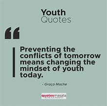
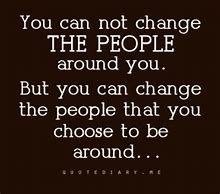
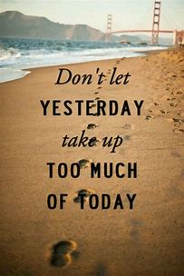
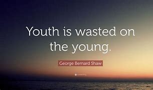
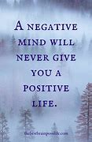

KYP A Global Platform For The Youth
Youth Acknowledgement By Kigenyi
As mentioned the mindset of the youth has to change.
It's because the people around you are meant to be your friends not your enemies to note that!

Joining hands brings the eternal joy and satisfaction to life wants and needs!
Once the youth realise their beauty mostly the girls, they become fierce and most times rude to other youths because of their beauty! This is bad!
The young get enough time to plan for their future in youth stage but most of them turn it into a play which is unserious!
Life for youth is another world of fantasy because they believe once their dreams will come true! Which is 100% possible! Because their time is unlimited!
Back To Top